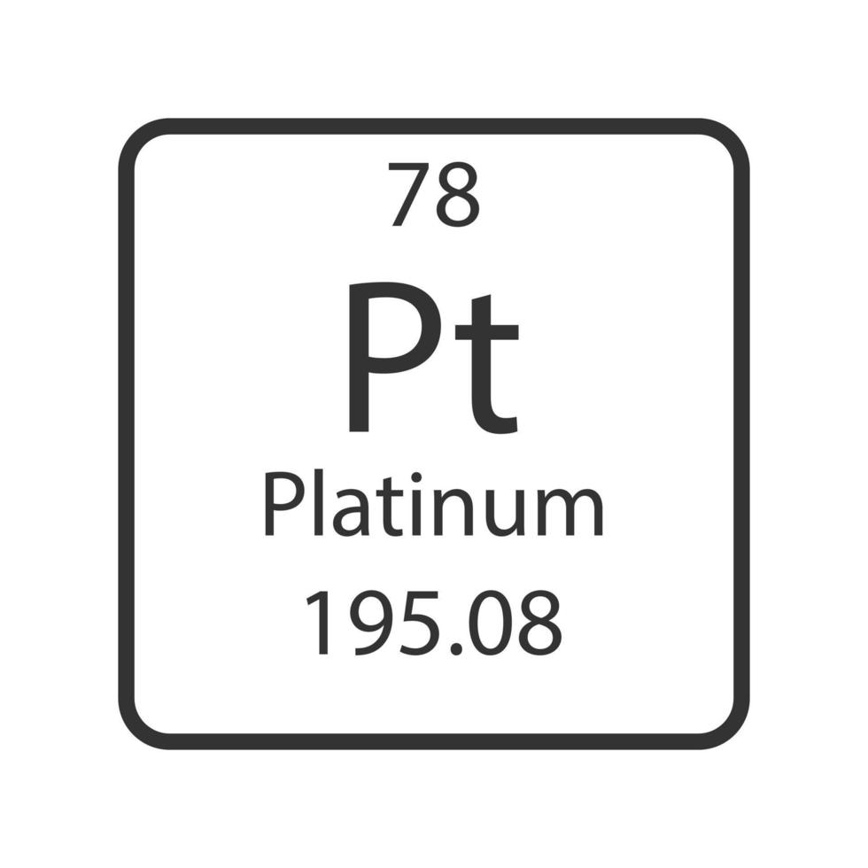
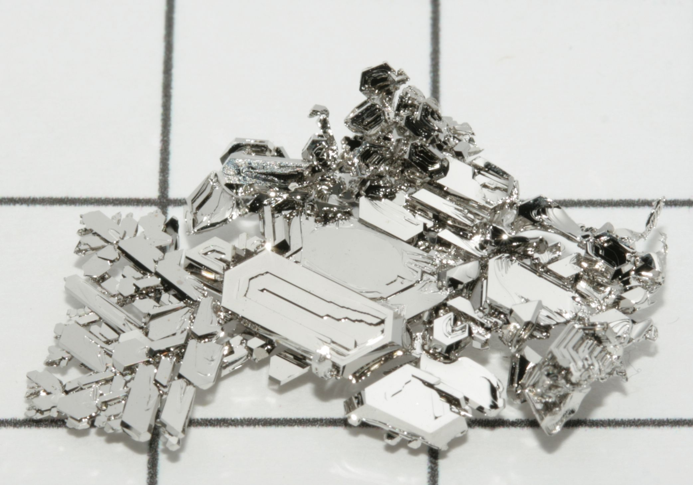

A platina é um metal de transição, resistente à corrosão e pouco reativo com o ar e a água. Também apresenta elevada resistência química e um ponto de fusão muito alto.
Imagem do Elemento:

A platina já era conhecida e usada pelos povos da América do Sul antes mesmo da chegada dos europeus. Em 1557, o estudioso italiano Júlio César Scaliger mencionou um metal encontrado na região, dizendo que ele era muito difícil de derreter com as técnicas que existiam naquela época.
Em 1735, o espanhol Antonio de Ulloa estudou esse material e levou informações sobre ele para a Europa. A partir do século XVIII, a platina começou a ser estudada de forma mais científica. O nome “platina” vem do espanhol platina, que é o diminutivo de plata, palavra que significa “prata”.
A platina é um metal bastante raro na crosta terrestre. Ela pode ser encontrada em sua forma metálica, principalmente em depósitos de sedimentos, ou junto com outros minerais. Um exemplo é a cooperita (PtS), um mineral que contém platina.
A África do Sul é uma das principais produtoras de platina do mundo, junto com a Rússia e o Zimbábue. Além disso, a platina também pode ser obtida durante o processamento de minérios de níquel e cobre.
A África do Sul é uma das principais produtoras de platina do mundo, junto com a Rússia e o Zimbábue. Além disso, a platina também pode ser obtida durante o processamento de minérios de níquel e cobre.
https://www.sgb.gov.br/metais-preciosos
https://www.gov.br/anm/pt-br/assuntos/economia-mineral
https://brasilescola.uol.com.br/quimica/platina.htm
https://www.infoescola.com/elementos-quimicos/platina/
https://www.gov.br/anm/pt-br/acesso-a-informacao/perguntas-frequentes/minerais-criticos-e-estrategicos/